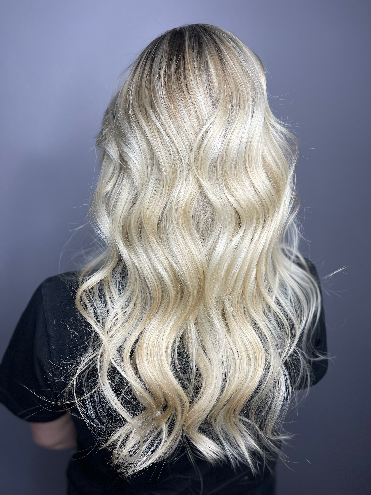

Станьте частью
команды
Мы ищем мастеров, которые любят профессию, хотят развиваться и разделяют наш принцип: красивое окрашивание начинается со здоровья волос.
Оставить заявкуМесто, где мастер
может расти
Мы строим студию, в которой мастеру хочется оставаться надолго: стабильный поток, честные условия и среда, которая помогает становиться сильнее.
Поток и доход
Высокий поток клиентов, понятная система роста дохода и сильное позиционирование студии в городе.
Обучение и разборы
Внутреннее обучение, разбор сложных случаев вместе с командой, наставничество и поддержка по формулам.
Среда и атмосфера
Красивое рабочее пространство, современные материалы, бережное отношение и сильные коллеги рядом.

Работать рядом
с сильными мастерами
В ИНДИАЛ мастер развивается не только через поток клиентов, но и через среду: рядом коллеги, которые делятся опытом, основатель участвует в обучении, а сложные работы становятся поводом для роста.
Нам близки мастера, которым важны качество волос, честная рекомендация, внимательное отношение к гостю и желание становиться сильнее в профессии.
- — Разборы сложных случаев без давления
- — Наставничество и поддержка
- — Эстетика, чистота и внимание к деталям
Кто нам
подходит
Три направления, в которых мы готовы принять нового человека в команду — от опытного колориста до стажёра после обучения.
Мастер-колорист
С опытом или без — если есть желание учиться, понимание важности диагностики и бережного подхода к волосам.
- Опыт от 6 месяцев или курсы
- Желание работать в команде
- Ответственность и аккуратность
Мастер по стрижкам
Любящий точную форму, умеющий работать с разными текстурами и давать гостям лёгкую укладку.
- Навык работы с разными типами волос
- Внимательная консультация
- Фокус на качество
Начинающий мастер
Если вы только закончили обучение и ищете место, где будут помогать расти — мы рассматриваем стажёров.
- Наставничество с первого дня
- Разборы и поддержка
- Постепенный ввод в поток